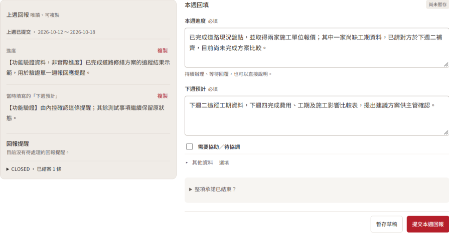
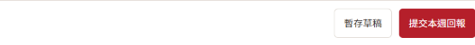

03 日常回報 / 01
填寫與提交
先確認回報週別，再把這週的成果與下一步說清楚。
先看上週，再更新本週
左側查看上週進度與當時填的「下週預計」，按「複製」後貼入右側欄位，再依本週實際結果修改；不要原封不動照貼。

2026/10/18 實際測試系統截圖。左側為既有功能驗證資料，示範參照與複製位置；右側為教學填寫範例，未暫存或提交。點圖可放大。
若顯示「上週未回報」，可使用「查看上週／補交」；沒有上週內容時，直接按本週實際進展填寫。
跟著同一個案例，完成兩個欄位
示範事項：道路修繕方案比較01
本週進度
已完成什麼 → 目前結果 → 還缺什麼
讓主管知道現在做到哪裡，還有哪些事情尚未完成。
- 已完成：現況盤點、取得兩家報價
- 還缺：一家工期資料
- 目前狀態：方案比較尚未完成
02
下週預計
要做什麼 → 交出什麼 → 何時完成
接著本週的進度，寫出下一步與可以核對的交付成果。
- 下週二：追蹤工期資料
- 下週四：完成比較表及建議方案
03
寫好了，記得提交
暫存草稿：先記錄進度，還不算交出週報。
提交本週回報：核對週別與內容後，正式送出。
每天可先暫存，週報整理完成後再提交。

逾期、鎖定與補報說明
逾期未提交仍可補報，系統保留逾期紀錄。截止後已提交內容鎖定；留言與提醒的操作方式，須依對應系統版本說明。